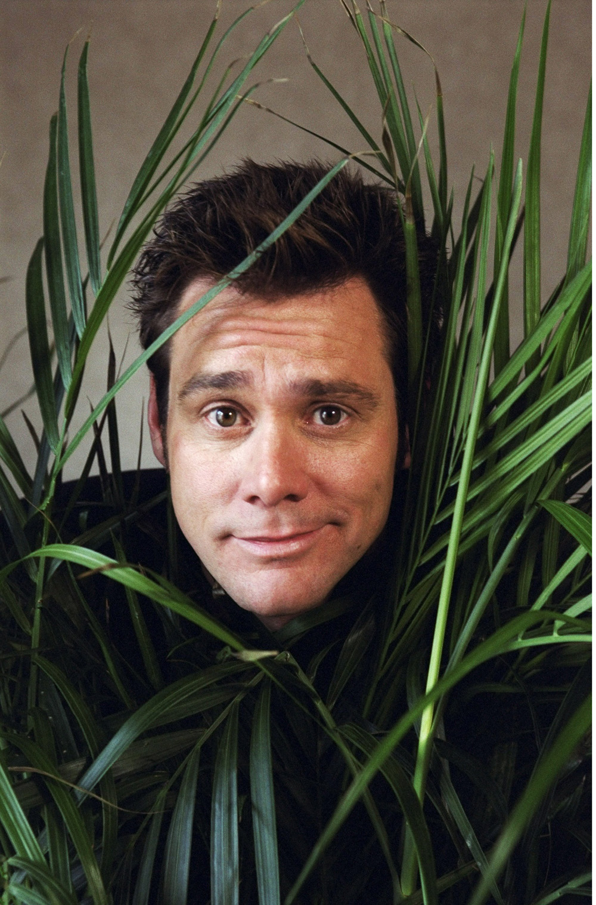

|  |
Джим КерріКанадсько-американський актор, продюсер, комік. |
Народився 17 січня 1962 року в місті Ньюмаркет, Канада. Його батьками були Кетлін Керрі (у дівоцтві Орам), співачка, а пізніше домогосподарка, і Персі Керрі, саксофоніст-самоук і бухгалтер. У Джима є старші сестри Пет і Рита, і старший брат Джон. Джим ріс у католицькій родині. Його предками були ірландці, шотландці, французи, і спочатку його прізвище звучало як Карре. Коли Джиму виповнилося 14 років, його сім'я переїхала до Скарборо (Торонто, Онтаріо), де він протягом двох років відвідував Школу Благословенної Трійці в Норт-Йорку. Наступний рік він навчався в Інституті Агінкорт, а потім недовго відвідував Середню школу Норсвью (загалом Джим провів три роки в 10-му класі).
Найпопулярніші фільми актора